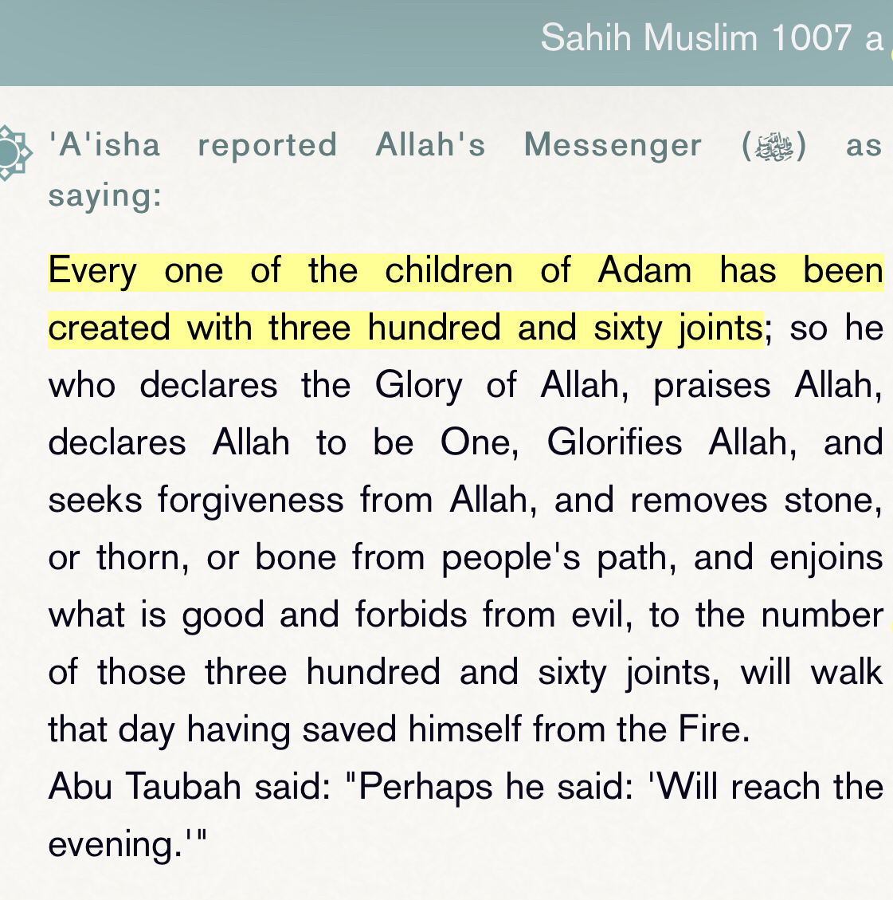

The prophet mentioned humans have 360 joints in their body. Now why is this important,
Untill the 1950s anatomist believed that the human body consisted of 240 joints and some other anatomist give
different numbers but most of them agreed it was 240 at the time.

But in the late 1990s anatomist discovered more joints in the the inner ear. So they have changed the numbers from
240 to 360 which matches what the prophet said about the human body.
Now let’s show you proof that this is what scientists today affirm about the human body joints.
We have 360 joints scientifically (https://hudsonphysicians.com/bones/)
Many researchers
long facebook link
https://www.themedical.co.uk/conditions/joint-problems
Now you may ask yourself, if prophet muhammed wasn’t a anatomist who was studying the human body.
Nor did he have the proper equipment to study the human body. How would he know such miraculous event without
medical science.
The prophet doesn’t speak on his own but he only says what God has told him that’s why he knew such things.
Now you may also be asking yourself didn’t a Chinese man discover this before prophet muhammed?
1. The Chinese anatomist guy the numbers of the joints wrong.
2. The prophet couldn’t copy him because his works as lost.
3. He knew this because he was a anatomist studying the human body while the prophet wasn’t.
Nor did he have access to his works.
"Traditional Chinese anatomy is based on the cosmic system, which postulates the presence of such hypothetical
structures as the 12 channels and the three so-called burning spaces. The body contains five organs
(heart, lungs, liver, spleen, and kidneys), which store up but do not eliminate, and five viscera
(such as the stomach, intestines, gallbladder, and bladder), which eliminate but do not store up.
Each organ is associated with one of the planets, colours, tones, smells, and tastes.
There are 365 bones and 365 joints in the body."
https://www.britannica.com/science/history-of-medicine/China
To be fair there is one narration of the Chinese writings that says 360, on the other hand it
is fabricated watch haytham tal’at video on this for more !
Another objection what does salama mean, well according to sharh Sahih muslim by an-nawawi it means joints not
bones!
Someone may argue back and say “The Ancient Chinese knew that fact before” however that claim is false.
They said it's 365 joints, and they didn't mean bone joints, but they were referring to locations in the body
where the spirit qi leaves and enters.